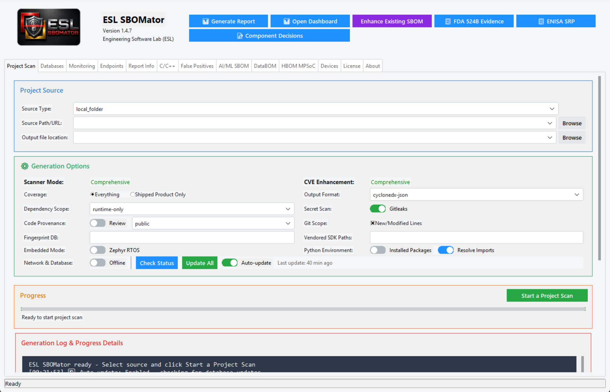
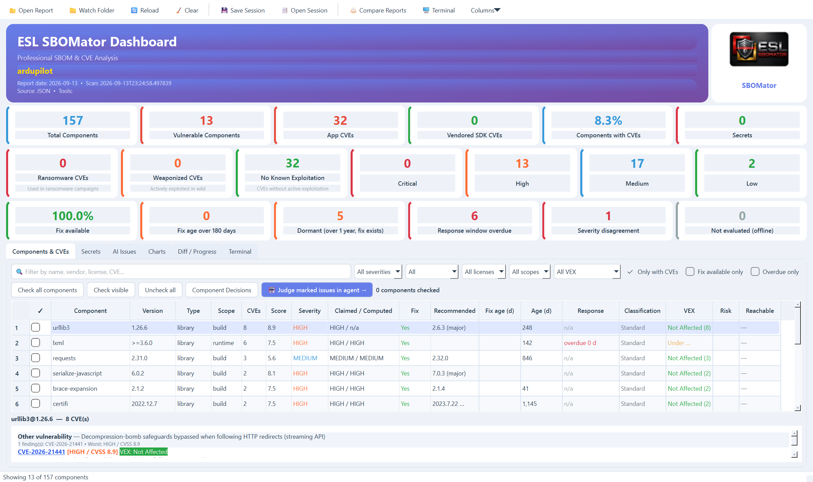
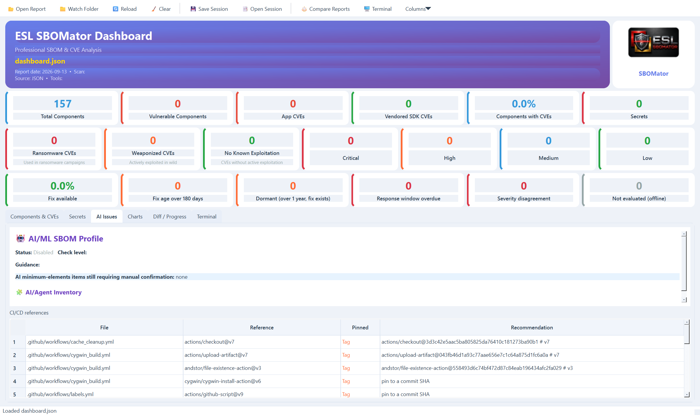
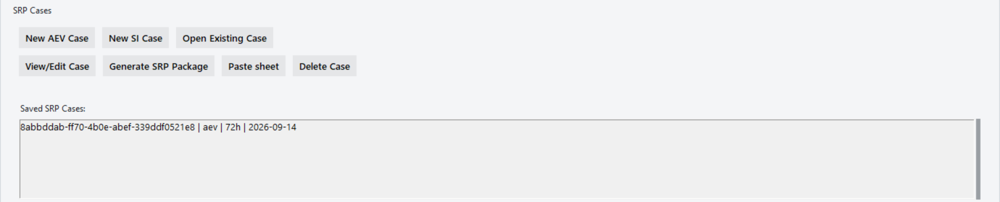

Software supply-chain evidence for the Cyber Resilience Act
From product scan to ENISA report,
in nine moves
CRA Article 14 reporting obligations apply since 11 September 2026. This file walks through how ESL SBOMator finds the risk, verifies it, and prepares the Early Warning, the 72-hour Notification and the Final Report for the ENISA Single Reporting Platform. Every exhibit is a real 1.4.7 screen; every teleprinter line is real tool output from a labelled drill.
Scan the product once; get SBOM, VEX and HTML report

Read the whole risk picture on one page

Verify the build pipeline itself: 14 CI/CD actions, 14 unpinned

uses: line becomes a pkg:github componentThe pipeline is inventoried in the SBOM, not only the application dependencies.acme-nonexistent-owner/setup-thing are caught before they run in CI.actions/checkout@v6 becomes a full 40-character commit pin, ready to paste.fail_on_unpinned_actions and the CLI exits 2 with a machine-readable violation list.Awareness at T0: the 24-hour clock starts at once
A labelled drill case: fictitious product, real but long-fixed CVE-2021-44228, nothing sent to ENISA. This is what the tool tells the operator.
Validation refuses an incomplete Early Warning
The seven glossary fields marked X for the 24-hour stage must be present. The tool lists exactly what is missing, then accepts the filled case.
No package leaves the tool until a human confirms reportability
CRA reporting is a legal decision. SBOMator records who decided, why, and on which evidence, and refuses to export before that decision exists.
The paste sheet: every portal field, glossary order, copy hint
ENISA offers no API (SRP FAQ 15), so the Assigned Representative transcribes into the web form. SBOMator prepares the exact text in the exact order of the SRP Glossary v1.3.
| No. | Field | Req. | Value | Copy hint |
|---|---|---|---|---|
| 1 | Notification type | X | Vulnerability | Select the matching portal option |
| 2 | Title | X | TEST EXERCISE - DO NOT SUBMIT - simulated AEV in ESL DrillProduct | Copy this text into the portal field |
| 3 | Summary | X | Tabletop drill. Fictitious product, simulated exploitation of CVE-2021-44228 in bundled log4j-core 2.14.1. | Copy this text into the portal field |
| 4 | Manufacturer name | X | Engineering Software Lab (ESL) - DRILL | Copy this text into the portal field |
| 5 | Member States (Concerned CSIRT) | X | DE, NL | Select or enter all applicable values |
| 6 | Product Name | X | ESL DrillProduct (fictitious) | Copy this text into the portal field |
| 7 | Product Version | X | 0.0.0-drill | Copy this text into the portal field |
| 19 | CVE ID | O | CVE-2021-44228 | Copy this text into the portal field |
The package: four files, one SHA-256 manifest, verifiable years later
verify_package re-hashes every file on demand.Log the portal submission: the clock clears, the case moves to 72h

Deadlines are derived from the awareness time, never typed by hand
SBOMator prepares and proves. The Assigned Representative submits.
Portal: portal.cra-srp.enisa.europa.eu | FAQ: ENISA SRP FAQ
Nine moves. One evidence trail.
Ready for 11 September 2026.
ESL SBOMator 1.4.7: CycloneDX 1.6 and 1.7 SBOM and VEX, readiness counters, CI/CD reference verification, a policy gate for CI, and the ENISA SRP case workflow with paste sheet, package manifest and audit chain.
Related: ESL Solutions for CRA | Real-time supply-chain threat detection | Hallusquatting protection